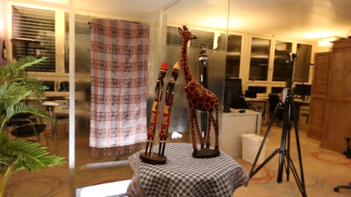
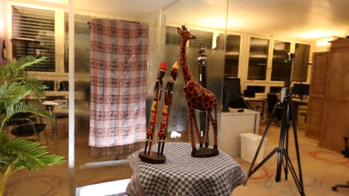

Uncertainty Estimation for Novel Views in Gaussian Splatting from Primitive-Based Representations of Error and Coverage
Thomas Gottwald1 • Edgar Heinert2 • Peter Stehr1 • Chamuditha Jayanga Galappaththige3 • Matthias Rottmann2
1 Department of Mathematics, University of Wuppertal, Wuppertal, Germany
2 Institute of Computer Science, University of Osnabrück, Osnabrück, Germany
3 Centre for Robotics, Queensland University of Technology, Brisbane, Australia


 

Abstract
We introduce PRIMU (Primitive-based Representations of Uncertainty), a post-hoc uncertainty estimation framework for Gaussian Splatting.
PRIMU constructs primitive-level representations of training-view coverage, training error and field-of-view occurrences.
Based on these representations, we render uncertainty feature maps, on which a pixel-wise regression is performed to obtain final, pixel-level uncertainty estimates.
• We demonstrate the effectiveness of our approach for estimating uncertainty in rendering and depth error.
• Additionally, we study uncertainty estimation on foreground objects and backgrounds, as well as the use of different feature map combinations and the generalization capabilities of the regression models to unseen scenes.
• We use the proposed uncertainty feature maps to directly guide active view selection, prioritizing viewpoints with high uncertainty indicators.
Method Overview
Step 1: Construct the Gaussian primitive representations by projecting information relevant for uncertainty estimation (training error, training-view coverage, field-of-view occurrences) onto them. The projection for training error and training-view coverage can be direction-dependent.
Step 2: Render uncertainty feature maps based on the Gaussian primitive representations.
Step 3: Perform pixel-wise regression on the uncertainty feature maps to obtain pixel-level uncertainty predictions. The regression model is trained on one or few holdout views to predict the true rendering/depth error.
Method Figure

Qualitative Results
Uncertainty Estimation
AUSE and Pearson correlation between uncertainty map and rendering/depth error on LF, MipNeRF360 and LLFF datasets. PRIMU used direction-dependent uncertainty feature maps.

Rendering Error Uncertainty Maps

Depth Uncertainty Maps

Resources & Links
Acknowledgments

T.G. P.S., and M.R. acknowledge support by the state of North Rhine-Westphalia and the European Union within the EFRE/JTF project "Just scan it 3D", grant no. EFRE-20800529. E.H. and M.R.\acknowledge support through the junior research group project "UnrEAL" by the German Federal Ministry of Education and Research (BMBF), grant no. 01IS22069.
Citation
@article{gottwald2025primu,
title={PRIMU: Uncertainty Estimation for Novel Views in Gaussian Splatting from Primitive-Based Representations of Error and Coverage},
author={Gottwald, Thomas and Heinert, Edgar and Stehr, Peter and Galappaththige, Chamuditha Jayanga and Rottmann, Matthias},
journal={arXiv:2508.02443},
year={2025}
}
Contact
Have questions or want to collaborate? Reach out:
- Email: gottwald[at]uni-wuppertal.de